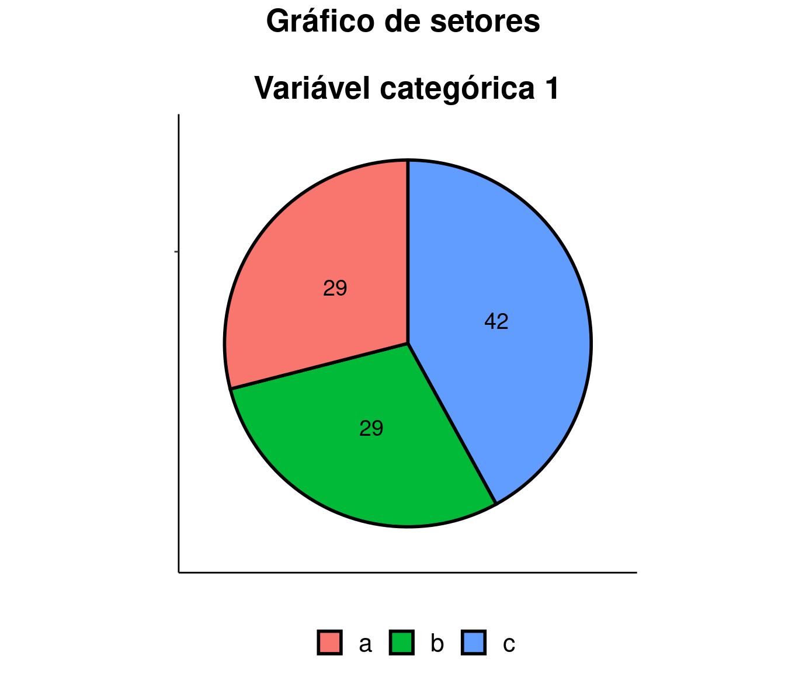
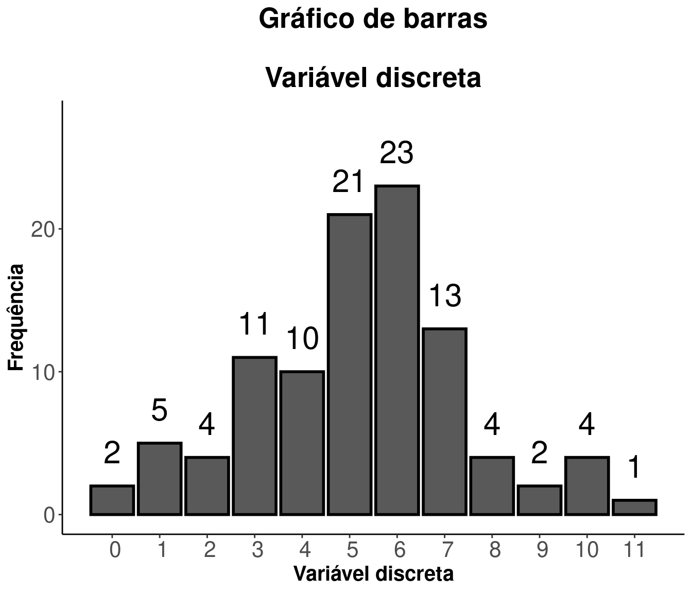
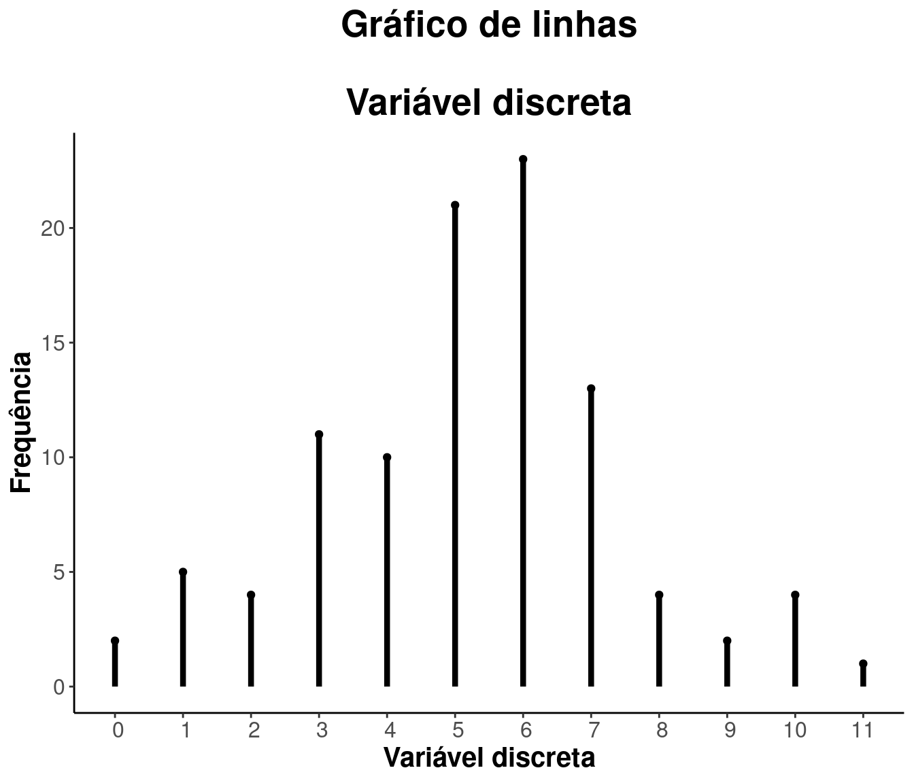
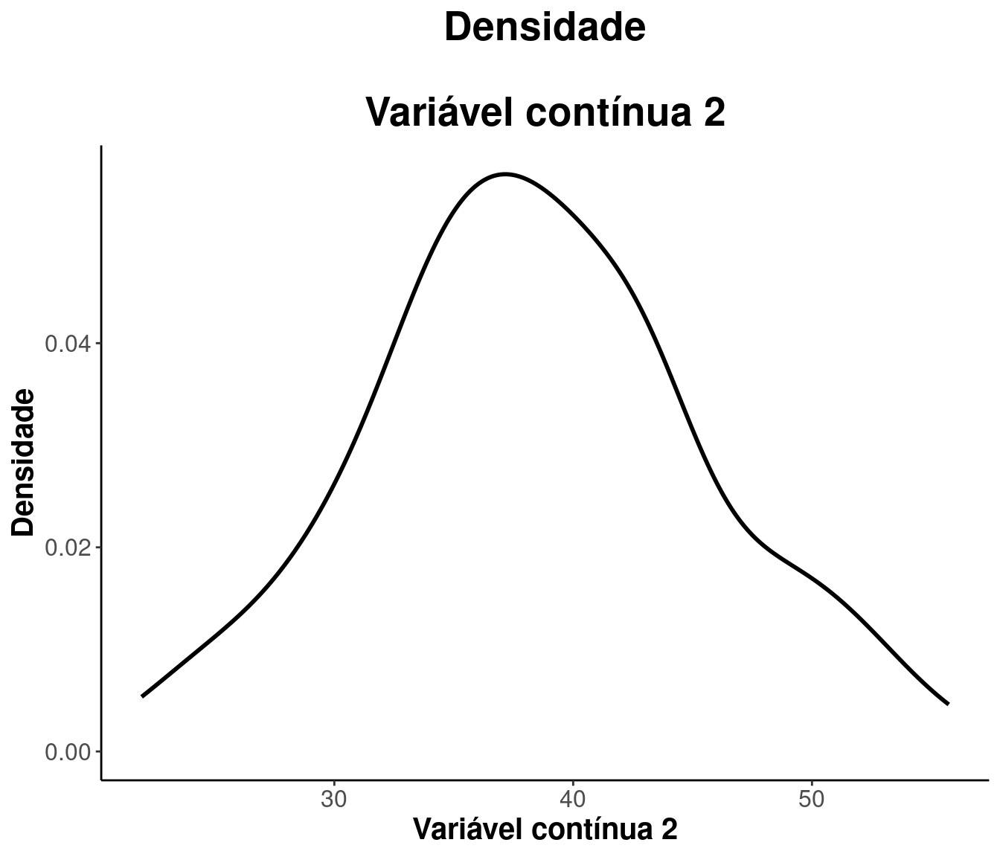
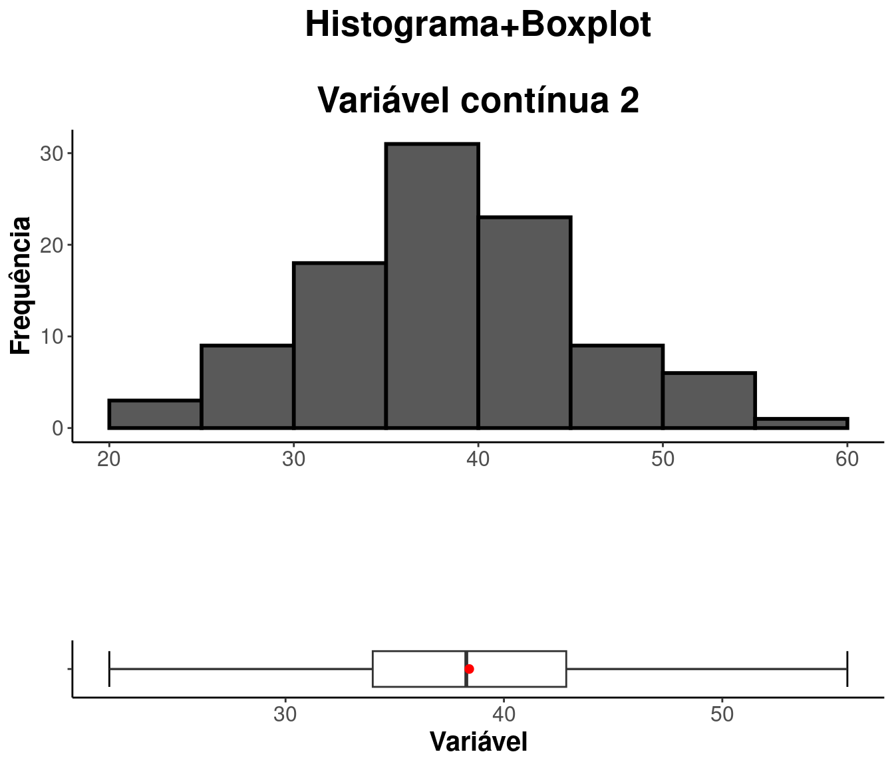
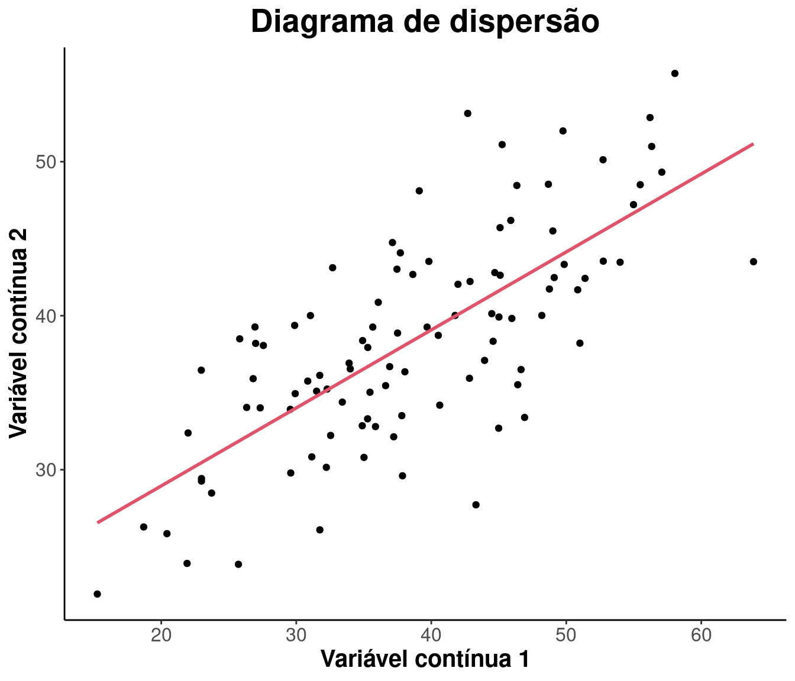
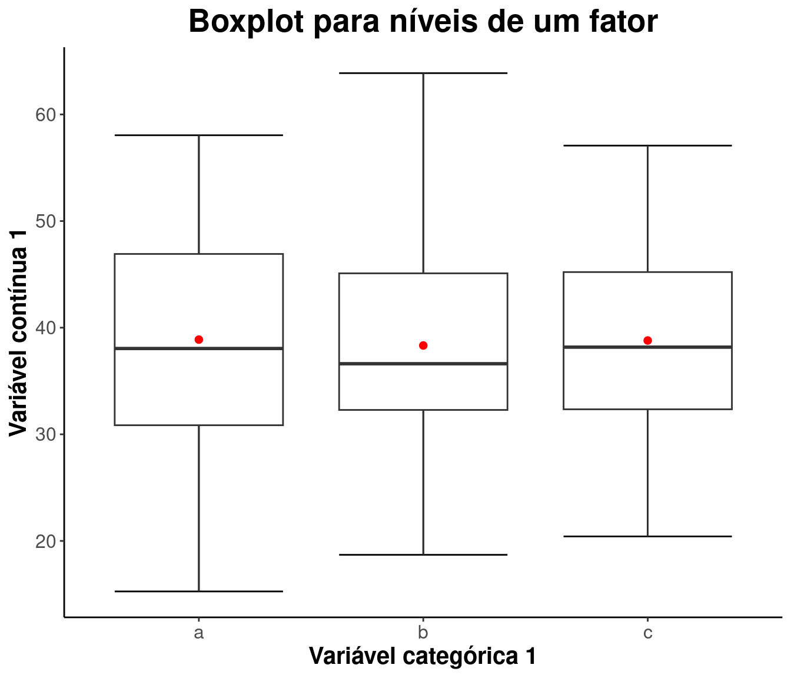
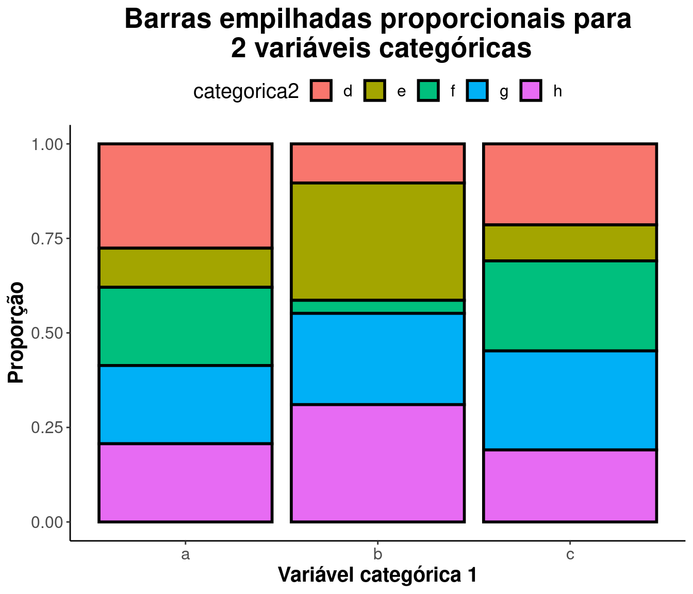

|
Um pouco sobre análise exploratória
Ok… Vencemos a etapa de montar o questionário, tratar as respostas, filtrar respostas coerentes e etc. Agora precisamos começar nossa análise. Em geral começamos sempre por uma análise exploratória do nosso conjunto de dados.
Em uma análise exploratória buscamos sintetizar a informação presente nos dados por meio de tabelas, gráficos e medidas.
Cuidados devem ser tomados no que diz respeito à escolha do tipo de representação. Devemos, por exemplo, evitar que o gráfico fique desproporcional ou privilegiando determinados valores a fim de induzir conclusões àqueles que utilizam o gráfico como forma de visualização.
A escolha do gráfico está diretamente ligada ao tipo das variáveis. Além disso, existem gráficos que permitem análises de mais de uma variável simultâneamente a fim de verificar como uma influencia a outra(s).
Tipos de variáveis
Existem dois tipos de variáveis: as numéricas (quantitativas) e as não numéricas (qualitativas):
Variáveis Quantitativas: assumem valores numéricos.
Podem ser:
Discretas: características mensuráveis que podem assumir apenas um número finito ou infinito contável de valores.
Contínuas: características mensuráveis que assumem valores em uma escala contínua, isto é, na reta real.
Variáveis Qualitativas: são as características definidas categorias, ou seja, representam uma classificação dos indivíduos e não uma característica numérica.
Podem ser:
Nominais: não existe ordenação nem peso entre as categorias.
Ordinais: existe uma ordenação entre as categorias.
Tendo isso em mente podemos começar a pensar em que medidas e gráficos podemos utilizar para representar nossas variáveis (análises univariadas) e também estudar a relação entre estas variáveis (análises bi, tri e multivariadas).
Algumas possibilidades de gráficos para cada tipo de variável são:
Qualitativa nominal ou ordinal: setores, barras, linhas.
Quantitativa discreta: barras, linhas, histograma, boxplot, densidade.
Quantitativas contínuas: histograma, densidade, boxplot.
Análises bivariadas:
- Quantivativa vs Quantitativa: Diagrama de dispersão.
- Qualitativa vs Quantitativa: Boxplots.
- Qualitativa vs Qualitativa: Gráfico de mosaico ou barras.
Considere um conjunto de dados genérico, composto por uma variável quantitativa discreta, duas variáveis quantitativas contínuas e duas variáveis qualitativas nominais. Veja alguns exemplos das representações mencionadas:
Tabelas
Tabela de frequências para variável categórica
| Niveis | Frequencia | Frequencia.relativa |
|---|---|---|
| a | 41 | 0.41 |
| b | 31 | 0.31 |
| c | 28 | 0.28 |
Tabela de frequências absolutas para variável discreta
| Niveis | Frequencia | Frequencia.relativa |
|---|---|---|
| 1 | 3 | 0.03 |
| 2 | 12 | 0.12 |
| 3 | 15 | 0.15 |
| 4 | 27 | 0.27 |
| 5 | 10 | 0.1 |
| 6 | 12 | 0.12 |
| 7 | 10 | 0.1 |
| 8 | 5 | 0.05 |
| 9 | 4 | 0.04 |
| 11 | 2 | 0.02 |
Tabela de frequências por faixas de valores
| Classes | Frequencia | Frequencia relativa |
|---|---|---|
| [15,20] | 1 | 0.01 |
| (20,25] | 5 | 0.05 |
| (25,30] | 11 | 0.11 |
| (30,35] | 15 | 0.15 |
| (35,40] | 16 | 0.16 |
| (40,45] | 19 | 0.19 |
| (45,50] | 9 | 0.09 |
| (50,55] | 16 | 0.16 |
| (55,60] | 5 | 0.05 |
| (60,65] | 2 | 0.02 |
| (65,70] | 1 | 0.01 |
Tabela de medidas descritivas
| Minimo | Quartil_1 | Media | Mediana | Quartil_3 | Maximo |
|---|---|---|---|---|---|
| 19.24 | 33.05 | 40.77 | 40.15 | 47.63 | 69.47 |
| Amplitude | Variancia | Desvio_padrao |
|---|---|---|
| 50.23 | 108.1 | 10.4 |
Gráficos
Representação de Frequências
Gráfico de setores

Gráfico de barras para variável qualitativa
Gráfico de barras para variável discreta

Gráfico de linhas

Distribuição de variáveis numéricas
Histograma
Densidade

Boxplot
Histograma + Boxplot

Histograma + Boxplot + Densidade
Representações bivariadas
Diagrama de dispersão

Boxplots para níveis de um fator

Barras para variáveis categóricas
Barras proporcionais para 2 variáveis categóricas


|

|

|